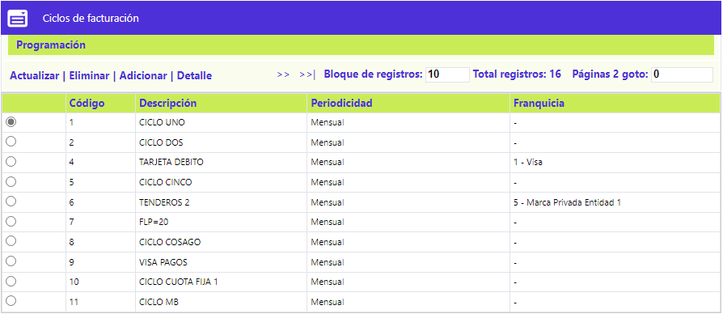
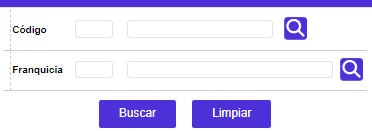
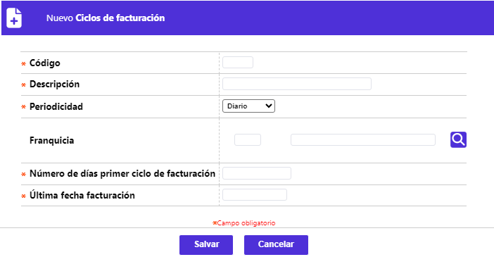
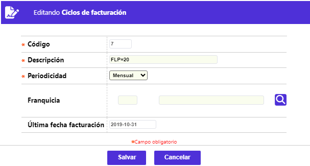
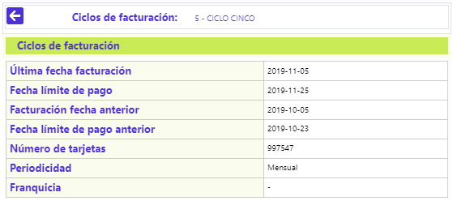
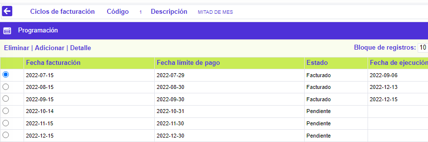
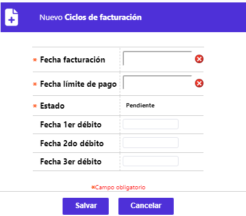
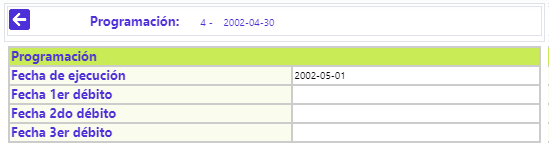

Ciclos de Facturación |
Mediante esta función se definen los lineamientos que se tendrán en cuenta para los cortes de los créditos de la entidad y su correspondiente número de ciclos.

El formulario cuenta con un filtro que le pérmite al usuario consultar la información para un ciclo de facturación en particular, a través del código y/o la franquicia a la cual pertenece el mismo.

El formulario contiene las opciones Actualizar, Eliminar, Adicionar y Detalle. Cuenta también con el hipervínculo Programación.
Adicionar: Si el usuario invoca la opción Adicionar se despliega un nuevo formulario.

Descripción de campos
Código |
Campo numérico de 3 posiciones, obligatorio, con el cual se registran los ciclos definidos por la entidad para realizar los cortes correspondientes a la facturación periódica de sus clientes. |
Descripción |
Una vez definida la identificación de cada ciclo en este campo alfanumérico de 30 posiciones, obligatorio, se registra el nombre asociado a dicho código. |
Periodicidad |
A través de las opciones provistas por el combo, en este campo obligatorio se selecciona la frecuencia con la cual se van a facturar las tarjetas que pertenezcan al ciclo. Las posibles opciones son Semanal, quincenal, mensual, trimestral y anual. |
Franquicia |
Este campo cuenta con lista de valores para seleccionar la franquicia o marca para la cual aplican las condiciones y programación definidas para el ciclo. |
Número de días primer ciclo de facturación |
En este campo obligatorio se diligencian la cantidad de días que el sistema debe tomar en cuenta para la primera fecha de la programación del ciclo, indistintamente de la periodicidad parametrizada para el mismo. |
Última fecha facturación |
Cada vez que se ejeucta el proceso de facturación este campo es actualizado con la fecha correspondiente a la última fecha en la que se ejecutó de acuerdo con el ciclo. |
Actualizar: Si el usuario selecciona un registro e invoca la opción Actualizar se despliega un formulario en el cual los campos modificables son Descripción, Periodicidad y Franquica.

Detalle: Si el usuario selecciona un registro e invoca la opción Detalle se despliega un formulario con la información completa del registro y en el cual ninguno de los campos es modificable

Programación: Si el usuario invoca la opción Programación, se despliega un nuevo formulario con el mismo nombre y en el cual se parametrizan las fechas en las cuales se haran los cortes de facturación para cada ciclo y las fechas para los débitos automáticos en el caso de empleados.

El formulario contiene las opciones Eliminar, Adicionar y Detalle.
Adicionar: Si el usuario invoca la opción Adicionar se despliega un nuevo formulario.

Descripción de campos
Fecha facturación |
Campo obligatorio en formato yyyy-mm-dd en el cual se registran las fechas en las cuales se realizarán la facturación de acuerdo con cada ciclo. |
Fecha límite de pago |
En este campo obligatorio en formato yyyy-mm-dd se registra para cada facturación la fecha límite para el pago por parte de los tarjetahabientes. |
Estado |
Campo de salida en el cual se indica si la fecha programada ya fue Facturada o se encuentra Pendiente para facturación |
Fecha 1er débito |
Campo en el que se registra la fecha para efectuar el primer débito automático cuando en los parámetros operativos se ha definido como frecuencia Mensual. |
Fecha 2do débito |
Campo en el que se registra la fecha para efectuar el segundo débito automático cuando en los parámetros operativos se ha definido como frecuencia Quincenal. |
Fecha 3er débito |
Campo en el que se registra la fecha para efectuar el segundo débito automático cuando en los parámetros operativos se ha definido como frecuencia Decenal. |
Detalle: Si el usuario selecciona un registro e invoca la opción Detalle se despliega un formulario con la información completa del registro y en el cual ninguno de los campos es modificable
